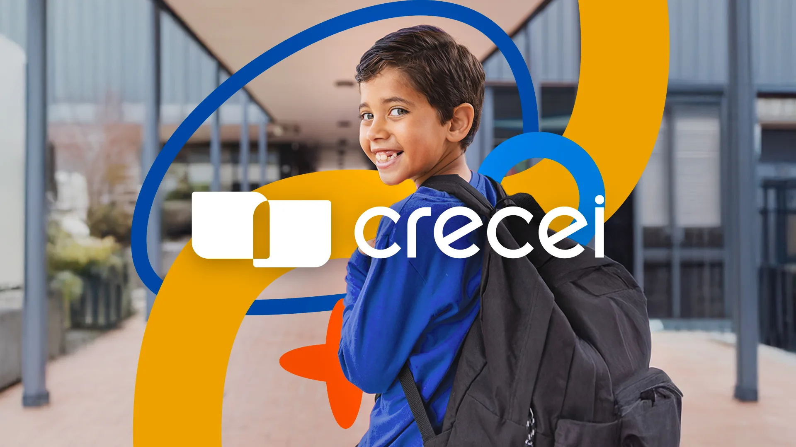
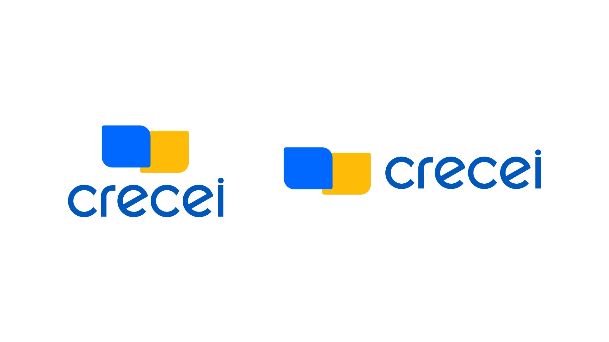
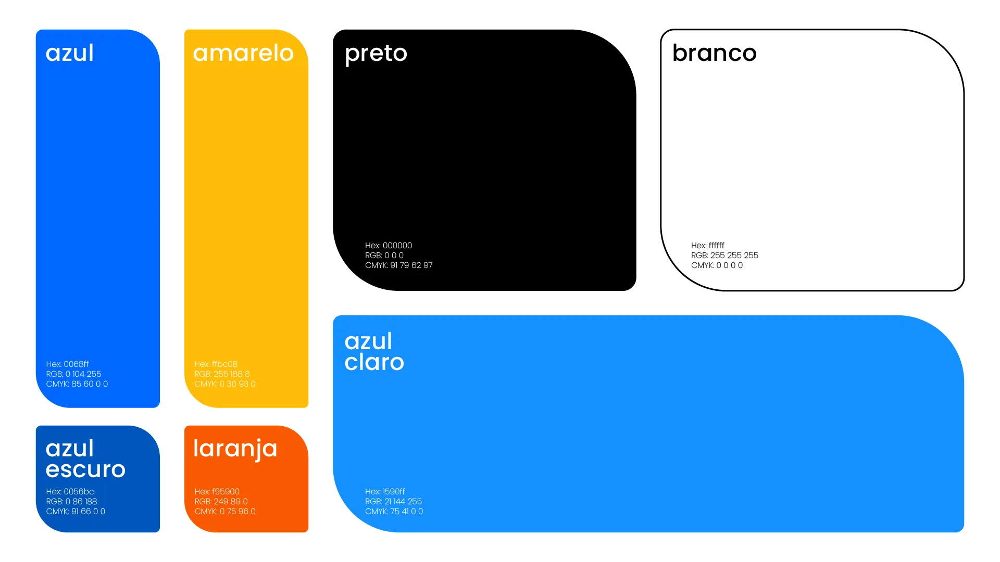
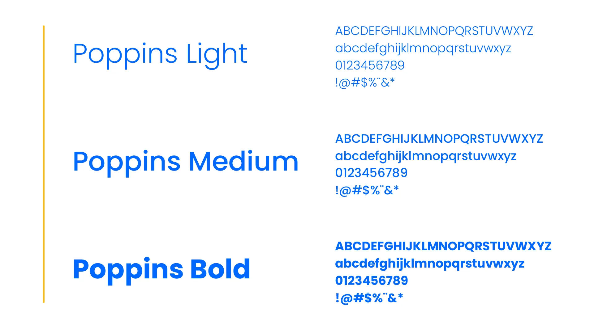
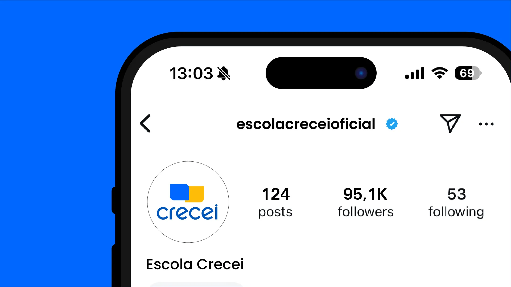
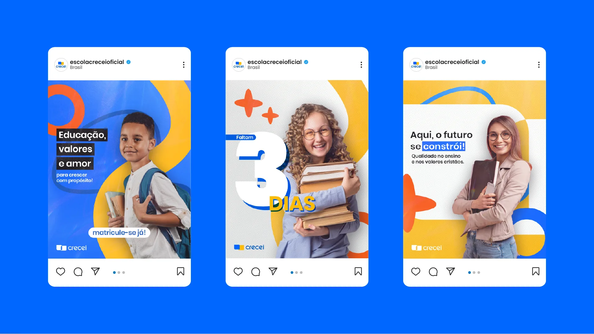
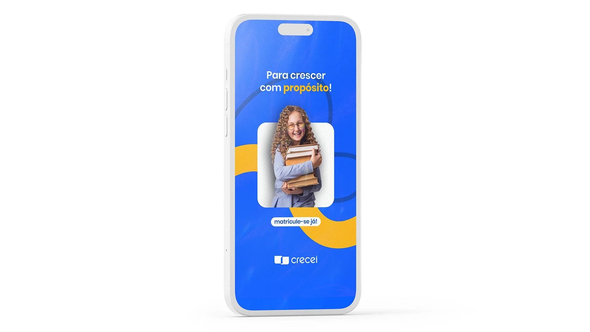

Project Overview
O CRECEI é uma iniciativa voltada ao desenvolvimento humano e espiritual, e este projeto teve como objetivo renovar sua identidade visual para refletir com mais clareza os valores que a marca carrega: crescimento, transformação e pertencimento.
O brand refresh partiu de uma análise profunda da essência da marca, resultando em uma linguagem visual mais coesa, moderna e com maior presença em diferentes aplicações — do digital ao impresso.
O resultado é uma identidade que une força visual com sensibilidade humana, posicionando o CRECEI como uma referência em seu segmento.
CRECEI is an initiative focused on human and spiritual development. This project aimed to renew its visual identity to more clearly reflect the values the brand carries: growth, transformation, and belonging.
The brand refresh started from a deep analysis of the brand's essence, resulting in a more cohesive, modern visual language with stronger presence across different applications — from digital to print.
The result is an identity that blends visual strength with human sensitivity, positioning CRECEI as a reference in its segment.


The Idea
O processo criativo envolveu a revisão de todos os elementos que compõem a identidade do CRECEI — tipografia, paleta de cores, símbolo e suas variações de aplicação. Cada decisão foi tomada com base nos pilares da marca e na experiência que ela proporciona ao seu público.
A tipografia foi escolhida para transmitir seriedade e acolhimento ao mesmo tempo. A paleta foi refinada para garantir contraste e legibilidade, sem perder a identidade original que já existia na marca.
The creative process involved reviewing all elements that make up CRECEI's identity — typography, color palette, symbol, and its application variations. Every decision was made based on the brand's pillars and the experience it provides to its audience.
The typography was chosen to convey seriousness and warmth at the same time. The palette was refined to ensure contrast and legibility, without losing the original identity that already existed within the brand.



